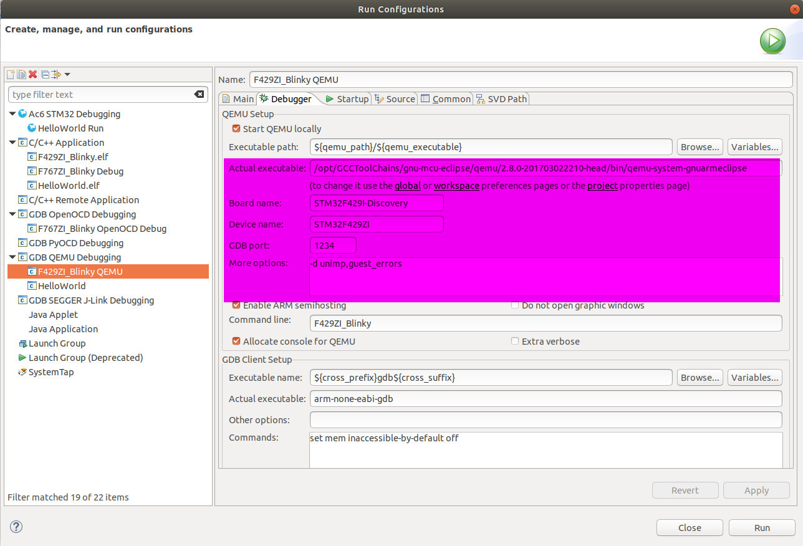

2.4 QEMU Simulation (Optional)
In the previous section, we have NOT run/test/debug the program yet. How to do that? Normally, there are 2 ways to test your code before flashing your code down to a chip.
- Way 1: Test in a simulator, which simulates the STM32 chip
- Way 2: Test on a real STM32 development board
In this section, we are going to talk about how to run/test/debug the program in the popular simulator QEMU.
2.4.1 QEMU Installation
Option 1: Official Installation
You can directly download QEMU's NEWEST release from its official website https://www.qemu.org.
Option 2: Ubuntu Repository
One command will do:
$ sudo apt install qemu
Option 3: Build from Source (Recommended)
This option is adopted in our case. Just strictly follow https://www.qemu.org/download/#source:
git clone git://git.qemu.org/qemu.git
cd qemu
git submodule init
git submodule update --recursive
mkdir build
cd build
../configure
make -j4
Option 4: GNU MCU Eclipse QEMU (Our Way)
Since in our course, we are using GNU MCU Eclipse Plugin, we also use its own QEMU simulator, from where we should be able to find its releases on Github. However, its NEWEST release is v2.8.0-20170301, which is quite OLD. According to GNU MCU Eclipse QEMU, its current supported boards and MCUs:
Supported Boards:
- Maple - LeafLab Arduino-style STM32 microcontroller board
- NUCLEO-F103RB - ST Nucleo Development Board for STM32 F1 series
- NetduinoGo - Netduino GoBus Development Board with STM32F4
- NetduinoPlus2 - Netduino Development Board with STM32F4
- STM32-E407 - Olimex Development Board for STM32F407ZGT6
- STM32-H103 - Olimex Header Board for STM32F103RBT6
- STM32-P103 - Olimex Prototype Board for STM32F103RBT6
- STM32-P107 - Olimex Prototype Board for STM32F107VCT6
- STM32F4-Discovery - ST Discovery kit for STM32F407/417 lines
- STM32F429I-Discovery - ST Discovery kit for STM32F429/439 lines
Supported MCUs:
- STM32F103RB
- STM32F107VC
- STM32F405RG
- STM32F407VG
- STM32F407ZG
- STM32F429ZI
- STM32L152RE
2.4.2 Test QEMU
Step 1: Create and Build Project
As mentioned above, since current GNU MCU Eclipse QEMU does NOT support STM32F767ZI yet, we have to carry our QEMU test with another board. Here, we pick up board STM32F429I-Discovery with MCU STM32F429ZI to carry out QEMU test.
Similar to previous section, let's first create a Blinky C/C++ project with board configuration STM32F4xx with Chip family STM32F429xx, as follows:

Then, we Build Project with any ARM Embedded GCC Toolchain. In our case, we build our code with Debug configuration with GNU MCU Eclipse ARM Embedded GCC Toolchain.
12:38:20 **** Build of configuration Debug for project F429ZI_Blinky ****
make all
Building file: ../system/src/stm32f4-hal/stm32f4xx_hal.c
Invoking: GNU ARM Cross C Compiler
arm-none-eabi-gcc -mcpu=cortex-m4 -mthumb -mfloat-abi=soft -Og -fmessage-length=0 -fsigned-char -ffunction-sections -fdata-sections -fno-move-loop-invariants -Wall -Wextra -g3 -DDEBUG -DUSE_FULL_ASSERT -DOS_USE_SEMIHOSTING -DTRACE -DOS_USE_TRACE_SEMIHOSTING_DEBUG -DSTM32F429xx -DUSE_HAL_DRIVER -DHSE_VALUE=8000000 -I"../include" -I"../system/include" -I"../system/include/cmsis" -I"../system/include/stm32f4-hal" -std=gnu11 -Wno-bad-function-cast -Wno-conversion -Wno-sign-conversion -Wno-unused-parameter -Wno-sign-compare -Wno-missing-prototypes -Wno-missing-declarations -MMD -MP -MF"system/src/stm32f4-hal/stm32f4xx_hal.d" -MT"system/src/stm32f4-hal/stm32f4xx_hal.o" -c -o "system/src/stm32f4-hal/stm32f4xx_hal.o" "../system/src/stm32f4-hal/stm32f4xx_hal.c"
Finished building: ../system/src/stm32f4-hal/stm32f4xx_hal.c
Building file: ../system/src/stm32f4-hal/stm32f4xx_hal_cortex.c
Invoking: GNU ARM Cross C Compiler
arm-none-eabi-gcc -mcpu=cortex-m4 -mthumb -mfloat-abi=soft -Og -fmessage-length=0 -fsigned-char -ffunction-sections -fdata-sections -fno-move-loop-invariants -Wall -Wextra -g3 -DDEBUG -DUSE_FULL_ASSERT -DOS_USE_SEMIHOSTING -DTRACE -DOS_USE_TRACE_SEMIHOSTING_DEBUG -DSTM32F429xx -DUSE_HAL_DRIVER -DHSE_VALUE=8000000 -I"../include" -I"../system/include" -I"../system/include/cmsis" -I"../system/include/stm32f4-hal" -std=gnu11 -Wno-bad-function-cast -Wno-conversion -Wno-sign-conversion -Wno-unused-parameter -Wno-sign-compare -Wno-missing-prototypes -Wno-missing-declarations -MMD -MP -MF"system/src/stm32f4-hal/stm32f4xx_hal_cortex.d" -MT"system/src/stm32f4-hal/stm32f4xx_hal_cortex.o" -c -o "system/src/stm32f4-hal/stm32f4xx_hal_cortex.o" "../system/src/stm32f4-hal/stm32f4xx_hal_cortex.c"
Finished building: ../system/src/stm32f4-hal/stm32f4xx_hal_cortex.c
Building file: ../system/src/stm32f4-hal/stm32f4xx_hal_dfsdm.c
Invoking: GNU ARM Cross C Compiler
arm-none-eabi-gcc -mcpu=cortex-m4 -mthumb -mfloat-abi=soft -Og -fmessage-length=0 -fsigned-char -ffunction-sections -fdata-sections -fno-move-loop-invariants -Wall -Wextra -g3 -DDEBUG -DUSE_FULL_ASSERT -DOS_USE_SEMIHOSTING -DTRACE -DOS_USE_TRACE_SEMIHOSTING_DEBUG -DSTM32F429xx -DUSE_HAL_DRIVER -DHSE_VALUE=8000000 -I"../include" -I"../system/include" -I"../system/include/cmsis" -I"../system/include/stm32f4-hal" -std=gnu11 -Wno-bad-function-cast -Wno-conversion -Wno-sign-conversion -Wno-unused-parameter -Wno-sign-compare -Wno-missing-prototypes -Wno-missing-declarations -MMD -MP -MF"system/src/stm32f4-hal/stm32f4xx_hal_dfsdm.d" -MT"system/src/stm32f4-hal/stm32f4xx_hal_dfsdm.o" -c -o "system/src/stm32f4-hal/stm32f4xx_hal_dfsdm.o" "../system/src/stm32f4-hal/stm32f4xx_hal_dfsdm.c"
Finished building: ../system/src/stm32f4-hal/stm32f4xx_hal_dfsdm.c
Building file: ../system/src/stm32f4-hal/stm32f4xx_hal_flash.c
Invoking: GNU ARM Cross C Compiler
arm-none-eabi-gcc -mcpu=cortex-m4 -mthumb -mfloat-abi=soft -Og -fmessage-length=0 -fsigned-char -ffunction-sections -fdata-sections -fno-move-loop-invariants -Wall -Wextra -g3 -DDEBUG -DUSE_FULL_ASSERT -DOS_USE_SEMIHOSTING -DTRACE -DOS_USE_TRACE_SEMIHOSTING_DEBUG -DSTM32F429xx -DUSE_HAL_DRIVER -DHSE_VALUE=8000000 -I"../include" -I"../system/include" -I"../system/include/cmsis" -I"../system/include/stm32f4-hal" -std=gnu11 -Wno-bad-function-cast -Wno-conversion -Wno-sign-conversion -Wno-unused-parameter -Wno-sign-compare -Wno-missing-prototypes -Wno-missing-declarations -MMD -MP -MF"system/src/stm32f4-hal/stm32f4xx_hal_flash.d" -MT"system/src/stm32f4-hal/stm32f4xx_hal_flash.o" -c -o "system/src/stm32f4-hal/stm32f4xx_hal_flash.o" "../system/src/stm32f4-hal/stm32f4xx_hal_flash.c"
Finished building: ../system/src/stm32f4-hal/stm32f4xx_hal_flash.c
Building file: ../system/src/stm32f4-hal/stm32f4xx_hal_gpio.c
Invoking: GNU ARM Cross C Compiler
arm-none-eabi-gcc -mcpu=cortex-m4 -mthumb -mfloat-abi=soft -Og -fmessage-length=0 -fsigned-char -ffunction-sections -fdata-sections -fno-move-loop-invariants -Wall -Wextra -g3 -DDEBUG -DUSE_FULL_ASSERT -DOS_USE_SEMIHOSTING -DTRACE -DOS_USE_TRACE_SEMIHOSTING_DEBUG -DSTM32F429xx -DUSE_HAL_DRIVER -DHSE_VALUE=8000000 -I"../include" -I"../system/include" -I"../system/include/cmsis" -I"../system/include/stm32f4-hal" -std=gnu11 -Wno-bad-function-cast -Wno-conversion -Wno-sign-conversion -Wno-unused-parameter -Wno-sign-compare -Wno-missing-prototypes -Wno-missing-declarations -MMD -MP -MF"system/src/stm32f4-hal/stm32f4xx_hal_gpio.d" -MT"system/src/stm32f4-hal/stm32f4xx_hal_gpio.o" -c -o "system/src/stm32f4-hal/stm32f4xx_hal_gpio.o" "../system/src/stm32f4-hal/stm32f4xx_hal_gpio.c"
Finished building: ../system/src/stm32f4-hal/stm32f4xx_hal_gpio.c
Building file: ../system/src/stm32f4-hal/stm32f4xx_hal_iwdg.c
Invoking: GNU ARM Cross C Compiler
arm-none-eabi-gcc -mcpu=cortex-m4 -mthumb -mfloat-abi=soft -Og -fmessage-length=0 -fsigned-char -ffunction-sections -fdata-sections -fno-move-loop-invariants -Wall -Wextra -g3 -DDEBUG -DUSE_FULL_ASSERT -DOS_USE_SEMIHOSTING -DTRACE -DOS_USE_TRACE_SEMIHOSTING_DEBUG -DSTM32F429xx -DUSE_HAL_DRIVER -DHSE_VALUE=8000000 -I"../include" -I"../system/include" -I"../system/include/cmsis" -I"../system/include/stm32f4-hal" -std=gnu11 -Wno-bad-function-cast -Wno-conversion -Wno-sign-conversion -Wno-unused-parameter -Wno-sign-compare -Wno-missing-prototypes -Wno-missing-declarations -MMD -MP -MF"system/src/stm32f4-hal/stm32f4xx_hal_iwdg.d" -MT"system/src/stm32f4-hal/stm32f4xx_hal_iwdg.o" -c -o "system/src/stm32f4-hal/stm32f4xx_hal_iwdg.o" "../system/src/stm32f4-hal/stm32f4xx_hal_iwdg.c"
Finished building: ../system/src/stm32f4-hal/stm32f4xx_hal_iwdg.c
Building file: ../system/src/stm32f4-hal/stm32f4xx_hal_pwr.c
Invoking: GNU ARM Cross C Compiler
arm-none-eabi-gcc -mcpu=cortex-m4 -mthumb -mfloat-abi=soft -Og -fmessage-length=0 -fsigned-char -ffunction-sections -fdata-sections -fno-move-loop-invariants -Wall -Wextra -g3 -DDEBUG -DUSE_FULL_ASSERT -DOS_USE_SEMIHOSTING -DTRACE -DOS_USE_TRACE_SEMIHOSTING_DEBUG -DSTM32F429xx -DUSE_HAL_DRIVER -DHSE_VALUE=8000000 -I"../include" -I"../system/include" -I"../system/include/cmsis" -I"../system/include/stm32f4-hal" -std=gnu11 -Wno-bad-function-cast -Wno-conversion -Wno-sign-conversion -Wno-unused-parameter -Wno-sign-compare -Wno-missing-prototypes -Wno-missing-declarations -MMD -MP -MF"system/src/stm32f4-hal/stm32f4xx_hal_pwr.d" -MT"system/src/stm32f4-hal/stm32f4xx_hal_pwr.o" -c -o "system/src/stm32f4-hal/stm32f4xx_hal_pwr.o" "../system/src/stm32f4-hal/stm32f4xx_hal_pwr.c"
Finished building: ../system/src/stm32f4-hal/stm32f4xx_hal_pwr.c
Building file: ../system/src/stm32f4-hal/stm32f4xx_hal_rcc.c
Invoking: GNU ARM Cross C Compiler
arm-none-eabi-gcc -mcpu=cortex-m4 -mthumb -mfloat-abi=soft -Og -fmessage-length=0 -fsigned-char -ffunction-sections -fdata-sections -fno-move-loop-invariants -Wall -Wextra -g3 -DDEBUG -DUSE_FULL_ASSERT -DOS_USE_SEMIHOSTING -DTRACE -DOS_USE_TRACE_SEMIHOSTING_DEBUG -DSTM32F429xx -DUSE_HAL_DRIVER -DHSE_VALUE=8000000 -I"../include" -I"../system/include" -I"../system/include/cmsis" -I"../system/include/stm32f4-hal" -std=gnu11 -Wno-bad-function-cast -Wno-conversion -Wno-sign-conversion -Wno-unused-parameter -Wno-sign-compare -Wno-missing-prototypes -Wno-missing-declarations -MMD -MP -MF"system/src/stm32f4-hal/stm32f4xx_hal_rcc.d" -MT"system/src/stm32f4-hal/stm32f4xx_hal_rcc.o" -c -o "system/src/stm32f4-hal/stm32f4xx_hal_rcc.o" "../system/src/stm32f4-hal/stm32f4xx_hal_rcc.c"
Finished building: ../system/src/stm32f4-hal/stm32f4xx_hal_rcc.c
Building file: ../system/src/newlib/_cxx.cpp
Invoking: GNU ARM Cross C++ Compiler
arm-none-eabi-g++ -mcpu=cortex-m4 -mthumb -mfloat-abi=soft -Og -fmessage-length=0 -fsigned-char -ffunction-sections -fdata-sections -fno-move-loop-invariants -Wall -Wextra -g3 -DDEBUG -DUSE_FULL_ASSERT -DOS_USE_SEMIHOSTING -DTRACE -DOS_USE_TRACE_SEMIHOSTING_DEBUG -DSTM32F429xx -DUSE_HAL_DRIVER -DHSE_VALUE=8000000 -I"../include" -I"../system/include" -I"../system/include/cmsis" -I"../system/include/stm32f4-hal" -std=gnu++11 -fabi-version=0 -fno-exceptions -fno-rtti -fno-use-cxa-atexit -fno-threadsafe-statics -MMD -MP -MF"system/src/newlib/_cxx.d" -MT"system/src/newlib/_cxx.o" -c -o "system/src/newlib/_cxx.o" "../system/src/newlib/_cxx.cpp"
Finished building: ../system/src/newlib/_cxx.cpp
Building file: ../system/src/newlib/_exit.c
Invoking: GNU ARM Cross C Compiler
arm-none-eabi-gcc -mcpu=cortex-m4 -mthumb -mfloat-abi=soft -Og -fmessage-length=0 -fsigned-char -ffunction-sections -fdata-sections -fno-move-loop-invariants -Wall -Wextra -g3 -DDEBUG -DUSE_FULL_ASSERT -DOS_USE_SEMIHOSTING -DTRACE -DOS_USE_TRACE_SEMIHOSTING_DEBUG -DSTM32F429xx -DUSE_HAL_DRIVER -DHSE_VALUE=8000000 -I"../include" -I"../system/include" -I"../system/include/cmsis" -I"../system/include/stm32f4-hal" -std=gnu11 -MMD -MP -MF"system/src/newlib/_exit.d" -MT"system/src/newlib/_exit.o" -c -o "system/src/newlib/_exit.o" "../system/src/newlib/_exit.c"
Finished building: ../system/src/newlib/_exit.c
Building file: ../system/src/newlib/_sbrk.c
Invoking: GNU ARM Cross C Compiler
arm-none-eabi-gcc -mcpu=cortex-m4 -mthumb -mfloat-abi=soft -Og -fmessage-length=0 -fsigned-char -ffunction-sections -fdata-sections -fno-move-loop-invariants -Wall -Wextra -g3 -DDEBUG -DUSE_FULL_ASSERT -DOS_USE_SEMIHOSTING -DTRACE -DOS_USE_TRACE_SEMIHOSTING_DEBUG -DSTM32F429xx -DUSE_HAL_DRIVER -DHSE_VALUE=8000000 -I"../include" -I"../system/include" -I"../system/include/cmsis" -I"../system/include/stm32f4-hal" -std=gnu11 -MMD -MP -MF"system/src/newlib/_sbrk.d" -MT"system/src/newlib/_sbrk.o" -c -o "system/src/newlib/_sbrk.o" "../system/src/newlib/_sbrk.c"
Finished building: ../system/src/newlib/_sbrk.c
Building file: ../system/src/newlib/_startup.c
Invoking: GNU ARM Cross C Compiler
arm-none-eabi-gcc -mcpu=cortex-m4 -mthumb -mfloat-abi=soft -Og -fmessage-length=0 -fsigned-char -ffunction-sections -fdata-sections -fno-move-loop-invariants -Wall -Wextra -g3 -DDEBUG -DUSE_FULL_ASSERT -DOS_USE_SEMIHOSTING -DTRACE -DOS_USE_TRACE_SEMIHOSTING_DEBUG -DSTM32F429xx -DUSE_HAL_DRIVER -DHSE_VALUE=8000000 -DOS_INCLUDE_STARTUP_INIT_MULTIPLE_RAM_SECTIONS -I"../include" -I"../system/include" -I"../system/include/cmsis" -I"../system/include/stm32f4-hal" -std=gnu11 -MMD -MP -MF"system/src/newlib/_startup.d" -MT"system/src/newlib/_startup.d" -c -o "system/src/newlib/_startup.o" "../system/src/newlib/_startup.c"
Finished building: ../system/src/newlib/_startup.c
Building file: ../system/src/newlib/_syscalls.c
Invoking: GNU ARM Cross C Compiler
arm-none-eabi-gcc -mcpu=cortex-m4 -mthumb -mfloat-abi=soft -Og -fmessage-length=0 -fsigned-char -ffunction-sections -fdata-sections -fno-move-loop-invariants -Wall -Wextra -g3 -DDEBUG -DUSE_FULL_ASSERT -DOS_USE_SEMIHOSTING -DTRACE -DOS_USE_TRACE_SEMIHOSTING_DEBUG -DSTM32F429xx -DUSE_HAL_DRIVER -DHSE_VALUE=8000000 -I"../include" -I"../system/include" -I"../system/include/cmsis" -I"../system/include/stm32f4-hal" -std=gnu11 -MMD -MP -MF"system/src/newlib/_syscalls.d" -MT"system/src/newlib/_syscalls.o" -c -o "system/src/newlib/_syscalls.o" "../system/src/newlib/_syscalls.c"
Finished building: ../system/src/newlib/_syscalls.c
Building file: ../system/src/newlib/assert.c
Invoking: GNU ARM Cross C Compiler
arm-none-eabi-gcc -mcpu=cortex-m4 -mthumb -mfloat-abi=soft -Og -fmessage-length=0 -fsigned-char -ffunction-sections -fdata-sections -fno-move-loop-invariants -Wall -Wextra -g3 -DDEBUG -DUSE_FULL_ASSERT -DOS_USE_SEMIHOSTING -DTRACE -DOS_USE_TRACE_SEMIHOSTING_DEBUG -DSTM32F429xx -DUSE_HAL_DRIVER -DHSE_VALUE=8000000 -I"../include" -I"../system/include" -I"../system/include/cmsis" -I"../system/include/stm32f4-hal" -std=gnu11 -MMD -MP -MF"system/src/newlib/assert.d" -MT"system/src/newlib/assert.o" -c -o "system/src/newlib/assert.o" "../system/src/newlib/assert.c"
Finished building: ../system/src/newlib/assert.c
Building file: ../system/src/diag/Trace.c
Invoking: GNU ARM Cross C Compiler
arm-none-eabi-gcc -mcpu=cortex-m4 -mthumb -mfloat-abi=soft -Og -fmessage-length=0 -fsigned-char -ffunction-sections -fdata-sections -fno-move-loop-invariants -Wall -Wextra -g3 -DDEBUG -DUSE_FULL_ASSERT -DOS_USE_SEMIHOSTING -DTRACE -DOS_USE_TRACE_SEMIHOSTING_DEBUG -DSTM32F429xx -DUSE_HAL_DRIVER -DHSE_VALUE=8000000 -I"../include" -I"../system/include" -I"../system/include/cmsis" -I"../system/include/stm32f4-hal" -std=gnu11 -MMD -MP -MF"system/src/diag/Trace.d" -MT"system/src/diag/Trace.o" -c -o "system/src/diag/Trace.o" "../system/src/diag/Trace.c"
Finished building: ../system/src/diag/Trace.c
Building file: ../system/src/diag/trace_impl.c
Invoking: GNU ARM Cross C Compiler
arm-none-eabi-gcc -mcpu=cortex-m4 -mthumb -mfloat-abi=soft -Og -fmessage-length=0 -fsigned-char -ffunction-sections -fdata-sections -fno-move-loop-invariants -Wall -Wextra -g3 -DDEBUG -DUSE_FULL_ASSERT -DOS_USE_SEMIHOSTING -DTRACE -DOS_USE_TRACE_SEMIHOSTING_DEBUG -DSTM32F429xx -DUSE_HAL_DRIVER -DHSE_VALUE=8000000 -I"../include" -I"../system/include" -I"../system/include/cmsis" -I"../system/include/stm32f4-hal" -std=gnu11 -MMD -MP -MF"system/src/diag/trace_impl.d" -MT"system/src/diag/trace_impl.o" -c -o "system/src/diag/trace_impl.o" "../system/src/diag/trace_impl.c"
Finished building: ../system/src/diag/trace_impl.c
Building file: ../system/src/cortexm/_initialize_hardware.c
Invoking: GNU ARM Cross C Compiler
arm-none-eabi-gcc -mcpu=cortex-m4 -mthumb -mfloat-abi=soft -Og -fmessage-length=0 -fsigned-char -ffunction-sections -fdata-sections -fno-move-loop-invariants -Wall -Wextra -g3 -DDEBUG -DUSE_FULL_ASSERT -DOS_USE_SEMIHOSTING -DTRACE -DOS_USE_TRACE_SEMIHOSTING_DEBUG -DSTM32F429xx -DUSE_HAL_DRIVER -DHSE_VALUE=8000000 -I"../include" -I"../system/include" -I"../system/include/cmsis" -I"../system/include/stm32f4-hal" -std=gnu11 -MMD -MP -MF"system/src/cortexm/_initialize_hardware.d" -MT"system/src/cortexm/_initialize_hardware.o" -c -o "system/src/cortexm/_initialize_hardware.o" "../system/src/cortexm/_initialize_hardware.c"
Finished building: ../system/src/cortexm/_initialize_hardware.c
Building file: ../system/src/cortexm/_reset_hardware.c
Invoking: GNU ARM Cross C Compiler
arm-none-eabi-gcc -mcpu=cortex-m4 -mthumb -mfloat-abi=soft -Og -fmessage-length=0 -fsigned-char -ffunction-sections -fdata-sections -fno-move-loop-invariants -Wall -Wextra -g3 -DDEBUG -DUSE_FULL_ASSERT -DOS_USE_SEMIHOSTING -DTRACE -DOS_USE_TRACE_SEMIHOSTING_DEBUG -DSTM32F429xx -DUSE_HAL_DRIVER -DHSE_VALUE=8000000 -I"../include" -I"../system/include" -I"../system/include/cmsis" -I"../system/include/stm32f4-hal" -std=gnu11 -MMD -MP -MF"system/src/cortexm/_reset_hardware.d" -MT"system/src/cortexm/_reset_hardware.o" -c -o "system/src/cortexm/_reset_hardware.o" "../system/src/cortexm/_reset_hardware.c"
Finished building: ../system/src/cortexm/_reset_hardware.c
Building file: ../system/src/cortexm/exception_handlers.c
Invoking: GNU ARM Cross C Compiler
arm-none-eabi-gcc -mcpu=cortex-m4 -mthumb -mfloat-abi=soft -Og -fmessage-length=0 -fsigned-char -ffunction-sections -fdata-sections -fno-move-loop-invariants -Wall -Wextra -g3 -DDEBUG -DUSE_FULL_ASSERT -DOS_USE_SEMIHOSTING -DTRACE -DOS_USE_TRACE_SEMIHOSTING_DEBUG -DSTM32F429xx -DUSE_HAL_DRIVER -DHSE_VALUE=8000000 -I"../include" -I"../system/include" -I"../system/include/cmsis" -I"../system/include/stm32f4-hal" -std=gnu11 -MMD -MP -MF"system/src/cortexm/exception_handlers.d" -MT"system/src/cortexm/exception_handlers.o" -c -o "system/src/cortexm/exception_handlers.o" "../system/src/cortexm/exception_handlers.c"
Finished building: ../system/src/cortexm/exception_handlers.c
Building file: ../system/src/cmsis/system_stm32f4xx.c
Invoking: GNU ARM Cross C Compiler
arm-none-eabi-gcc -mcpu=cortex-m4 -mthumb -mfloat-abi=soft -Og -fmessage-length=0 -fsigned-char -ffunction-sections -fdata-sections -fno-move-loop-invariants -Wall -Wextra -g3 -DDEBUG -DUSE_FULL_ASSERT -DOS_USE_SEMIHOSTING -DTRACE -DOS_USE_TRACE_SEMIHOSTING_DEBUG -DSTM32F429xx -DUSE_HAL_DRIVER -DHSE_VALUE=8000000 -I"../include" -I"../system/include" -I"../system/include/cmsis" -I"../system/include/stm32f4-hal" -std=gnu11 -MMD -MP -MF"system/src/cmsis/system_stm32f4xx.d" -MT"system/src/cmsis/system_stm32f4xx.o" -c -o "system/src/cmsis/system_stm32f4xx.o" "../system/src/cmsis/system_stm32f4xx.c"
Finished building: ../system/src/cmsis/system_stm32f4xx.c
Building file: ../system/src/cmsis/vectors_stm32f429xx.c
Invoking: GNU ARM Cross C Compiler
arm-none-eabi-gcc -mcpu=cortex-m4 -mthumb -mfloat-abi=soft -Og -fmessage-length=0 -fsigned-char -ffunction-sections -fdata-sections -fno-move-loop-invariants -Wall -Wextra -g3 -DDEBUG -DUSE_FULL_ASSERT -DOS_USE_SEMIHOSTING -DTRACE -DOS_USE_TRACE_SEMIHOSTING_DEBUG -DSTM32F429xx -DUSE_HAL_DRIVER -DHSE_VALUE=8000000 -I"../include" -I"../system/include" -I"../system/include/cmsis" -I"../system/include/stm32f4-hal" -std=gnu11 -MMD -MP -MF"system/src/cmsis/vectors_stm32f429xx.d" -MT"system/src/cmsis/vectors_stm32f429xx.o" -c -o "system/src/cmsis/vectors_stm32f429xx.o" "../system/src/cmsis/vectors_stm32f429xx.c"
Finished building: ../system/src/cmsis/vectors_stm32f429xx.c
Building file: ../src/BlinkLed.cpp
Invoking: GNU ARM Cross C++ Compiler
arm-none-eabi-g++ -mcpu=cortex-m4 -mthumb -mfloat-abi=soft -Og -fmessage-length=0 -fsigned-char -ffunction-sections -fdata-sections -fno-move-loop-invariants -Wall -Wextra -g3 -DDEBUG -DUSE_FULL_ASSERT -DOS_USE_SEMIHOSTING -DTRACE -DOS_USE_TRACE_SEMIHOSTING_DEBUG -DSTM32F429xx -DUSE_HAL_DRIVER -DHSE_VALUE=8000000 -I"../include" -I"../system/include" -I"../system/include/cmsis" -I"../system/include/stm32f4-hal" -std=gnu++11 -fabi-version=0 -fno-exceptions -fno-rtti -fno-use-cxa-atexit -fno-threadsafe-statics -MMD -MP -MF"src/BlinkLed.d" -MT"src/BlinkLed.o" -c -o "src/BlinkLed.o" "../src/BlinkLed.cpp"
Finished building: ../src/BlinkLed.cpp
Building file: ../src/Timer.cpp
Invoking: GNU ARM Cross C++ Compiler
arm-none-eabi-g++ -mcpu=cortex-m4 -mthumb -mfloat-abi=soft -Og -fmessage-length=0 -fsigned-char -ffunction-sections -fdata-sections -fno-move-loop-invariants -Wall -Wextra -g3 -DDEBUG -DUSE_FULL_ASSERT -DOS_USE_SEMIHOSTING -DTRACE -DOS_USE_TRACE_SEMIHOSTING_DEBUG -DSTM32F429xx -DUSE_HAL_DRIVER -DHSE_VALUE=8000000 -I"../include" -I"../system/include" -I"../system/include/cmsis" -I"../system/include/stm32f4-hal" -std=gnu++11 -fabi-version=0 -fno-exceptions -fno-rtti -fno-use-cxa-atexit -fno-threadsafe-statics -MMD -MP -MF"src/Timer.d" -MT"src/Timer.o" -c -o "src/Timer.o" "../src/Timer.cpp"
Finished building: ../src/Timer.cpp
Building file: ../src/_initialize_hardware.c
Invoking: GNU ARM Cross C Compiler
arm-none-eabi-gcc -mcpu=cortex-m4 -mthumb -mfloat-abi=soft -Og -fmessage-length=0 -fsigned-char -ffunction-sections -fdata-sections -fno-move-loop-invariants -Wall -Wextra -g3 -DDEBUG -DUSE_FULL_ASSERT -DOS_USE_SEMIHOSTING -DTRACE -DOS_USE_TRACE_SEMIHOSTING_DEBUG -DSTM32F429xx -DUSE_HAL_DRIVER -DHSE_VALUE=8000000 -I"../include" -I"../system/include" -I"../system/include/cmsis" -I"../system/include/stm32f4-hal" -std=gnu11 -MMD -MP -MF"src/_initialize_hardware.d" -MT"src/_initialize_hardware.o" -c -o "src/_initialize_hardware.o" "../src/_initialize_hardware.c"
../src/_initialize_hardware.c: In function 'SystemClock_Config':
../src/_initialize_hardware.c:126:2: warning: #warning "Please check if the SystemClock_Config() settings match your board!" [-Wcpp]
#warning "Please check if the SystemClock_Config() settings match your board!"
^~~~~~~
Finished building: ../src/_initialize_hardware.c
Building file: ../src/_write.c
Invoking: GNU ARM Cross C Compiler
arm-none-eabi-gcc -mcpu=cortex-m4 -mthumb -mfloat-abi=soft -Og -fmessage-length=0 -fsigned-char -ffunction-sections -fdata-sections -fno-move-loop-invariants -Wall -Wextra -g3 -DDEBUG -DUSE_FULL_ASSERT -DOS_USE_SEMIHOSTING -DTRACE -DOS_USE_TRACE_SEMIHOSTING_DEBUG -DSTM32F429xx -DUSE_HAL_DRIVER -DHSE_VALUE=8000000 -I"../include" -I"../system/include" -I"../system/include/cmsis" -I"../system/include/stm32f4-hal" -std=gnu11 -MMD -MP -MF"src/_write.d" -MT"src/_write.o" -c -o "src/_write.o" "../src/_write.c"
Finished building: ../src/_write.c
Building file: ../src/main.cpp
Invoking: GNU ARM Cross C++ Compiler
arm-none-eabi-g++ -mcpu=cortex-m4 -mthumb -mfloat-abi=soft -Og -fmessage-length=0 -fsigned-char -ffunction-sections -fdata-sections -fno-move-loop-invariants -Wall -Wextra -g3 -DDEBUG -DUSE_FULL_ASSERT -DOS_USE_SEMIHOSTING -DTRACE -DOS_USE_TRACE_SEMIHOSTING_DEBUG -DSTM32F429xx -DUSE_HAL_DRIVER -DHSE_VALUE=8000000 -I"../include" -I"../system/include" -I"../system/include/cmsis" -I"../system/include/stm32f4-hal" -std=gnu++11 -fabi-version=0 -fno-exceptions -fno-rtti -fno-use-cxa-atexit -fno-threadsafe-statics -MMD -MP -MF"src/main.d" -MT"src/main.o" -c -o "src/main.o" "../src/main.cpp"
../src/main.cpp:121:2: warning: #warning "Assume a STM32F429I-Discovery board, PG13-PG14, active high." [-Wcpp]
#warning "Assume a STM32F429I-Discovery board, PG13-PG14, active high."
^~~~~~~
Finished building: ../src/main.cpp
Building file: ../src/stm32f4xx_hal_msp.c
Invoking: GNU ARM Cross C Compiler
arm-none-eabi-gcc -mcpu=cortex-m4 -mthumb -mfloat-abi=soft -Og -fmessage-length=0 -fsigned-char -ffunction-sections -fdata-sections -fno-move-loop-invariants -Wall -Wextra -g3 -DDEBUG -DUSE_FULL_ASSERT -DOS_USE_SEMIHOSTING -DTRACE -DOS_USE_TRACE_SEMIHOSTING_DEBUG -DSTM32F429xx -DUSE_HAL_DRIVER -DHSE_VALUE=8000000 -I"../include" -I"../system/include" -I"../system/include/cmsis" -I"../system/include/stm32f4-hal" -std=gnu11 -Wno-missing-prototypes -Wno-missing-declarations -MMD -MP -MF"src/stm32f4xx_hal_msp.d" -MT"src/stm32f4xx_hal_msp.d" -c -o "src/stm32f4xx_hal_msp.o" "../src/stm32f4xx_hal_msp.c"
Finished building: ../src/stm32f4xx_hal_msp.c
Building target: F429ZI_Blinky.elf
Invoking: GNU ARM Cross C++ Linker
arm-none-eabi-g++ -mcpu=cortex-m4 -mthumb -mfloat-abi=soft -Og -fmessage-length=0 -fsigned-char -ffunction-sections -fdata-sections -fno-move-loop-invariants -Wall -Wextra -g3 -T mem.ld -T libs.ld -T sections.ld -nostartfiles -Xlinker --gc-sections -L"../ldscripts" -Wl,-Map,"F429ZI_Blinky.map" --specs=nano.specs -o "F429ZI_Blinky.elf" ./system/src/stm32f4-hal/stm32f4xx_hal.o ./system/src/stm32f4-hal/stm32f4xx_hal_cortex.o ./system/src/stm32f4-hal/stm32f4xx_hal_dfsdm.o ./system/src/stm32f4-hal/stm32f4xx_hal_flash.o ./system/src/stm32f4-hal/stm32f4xx_hal_gpio.o ./system/src/stm32f4-hal/stm32f4xx_hal_iwdg.o ./system/src/stm32f4-hal/stm32f4xx_hal_pwr.o ./system/src/stm32f4-hal/stm32f4xx_hal_rcc.o ./system/src/newlib/_cxx.o ./system/src/newlib/_exit.o ./system/src/newlib/_sbrk.o ./system/src/newlib/_startup.o ./system/src/newlib/_syscalls.o ./system/src/newlib/assert.o ./system/src/diag/Trace.o ./system/src/diag/trace_impl.o ./system/src/cortexm/_initialize_hardware.o ./system/src/cortexm/_reset_hardware.o ./system/src/cortexm/exception_handlers.o ./system/src/cmsis/system_stm32f4xx.o ./system/src/cmsis/vectors_stm32f429xx.o ./src/BlinkLed.o ./src/Timer.o ./src/_initialize_hardware.o ./src/_write.o ./src/main.o ./src/stm32f4xx_hal_msp.o
Finished building target: F429ZI_Blinky.elf
Invoking: GNU ARM Cross Create Flash Image
arm-none-eabi-objcopy -O ihex "F429ZI_Blinky.elf" "F429ZI_Blinky.hex"
Finished building: F429ZI_Blinky.hex
Invoking: GNU ARM Cross Print Size
arm-none-eabi-size --format=berkeley "F429ZI_Blinky.elf"
text data bss dec hex filename
13278 520 740 14538 38ca F429ZI_Blinky.elf
Finished building: F429ZI_Blinky.siz
12:38:24 Build Finished (took 3s.574ms)
As you can see, a file named F429ZI_Blinky.elf is produced under folder Debug or Release, depending on what kind of target/configuration you specified to build.
Step 2: Run Project with QEMU
Finally, we need to run the project by emulating STM32F429I-Discovery with chip STM32F429ZI via QEMU. Right click on the built file HelloWorld.elf -> Run As -> Run Configurations -> GDB QEMU Debugging -> New. We creat a new configuration named F429ZI_Blinky QEMU, and make the Run Configurations as in the following two images:


And the project Blinky successfully run with the following output:
GNU ARM Eclipse 64-bits QEMU v2.8.0 (qemu-system-gnuarmeclipse).
Board: 'STM32F429I-Discovery' (ST Discovery kit for STM32F429/439 lines).
Device: 'STM32F429ZI' (Cortex-M4 r0p0, MPU, 4 NVIC prio bits, 91 IRQs), Flash: 2048 kB, RAM: 192 kB.
Command line: 'F429ZI_Blinky' (13 bytes).
Cortex-M4 r0p0 core initialised.
GDB Server listening on: 'tcp::1234'...
Cortex-M4 r0p0 core reset.
... connection accepted from 127.0.0.1.
Execute 'mon system_reset'.
Cortex-M4 r0p0 core reset.
PRIGROUP unimplemented
main(argc=1, argv=["F429ZI_Blinky"]);
Hello ARM World!
Standard output message.
Standard error message.
System clock: 168000000 Hz
[led:green on]
[led:red on]
[led:green off]
[led:red off]
Second 1
[led:green on]
[led:green off]
[led:red on]
Second 2
[led:red off]
Second 3
[led:green on]
Second 4
[led:green off]
[led:red on]
Second 5
[led:green on]
[led:green off]
Second 6
[led:red off]
Second 7
[led:green on]
[led:red on]
QEMU semihosting exit(0)
And GNU MCU Eclipse QEMU emulates STM32F429I-Discovery board on the screen as follows: